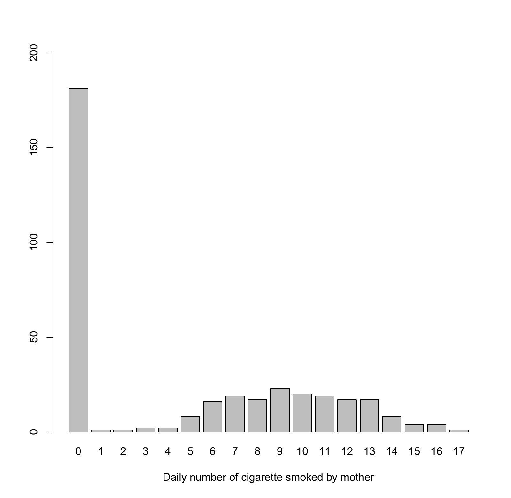

3.1 Exponential families and generalized linear models
Chapter 2 showed that missing covariates require a joint model for the response and covariates. This chapter keeps that principle and broadens the response model. The computational plan remains the same: derive the complete-data score, average over missing covariate values, and fit the resulting weighted complete-data problem. We begin with the generalized linear model because its score structure explains why the same software machinery can be reused.
The notation here uses a precision-like parameter \(\phi\), so that variances are proportional to \(\phi^{-1}\). Also, the function \(\mu(\eta)\) maps the linear predictor to the mean; in standard GLM terminology it is the inverse link. Keeping these conventions in mind prevents confusion with texts that use \(\phi\) for dispersion and \(g(\mu)=\eta\) for the link.
The normal regression calculations of Chapter 2 extend to a wider range of response distributions. Generalized linear models (GLMs) connect a covariate-dependent mean to an exponential-family distribution, allowing binary responses, counts, and positive continuous measurements to be modeled within one framework. Examples include binomial, Poisson, gamma, geometric, and inverse Gaussian families. Before introducing covariates, we develop the common probability structure for a single response \(Y\). Its mean, variance, and score identities will then supply the regression calculations and, in turn, the weighted M steps for incomplete covariates.
To facilitate model building in the regression setting, we re-formulate the exponential family as follows.
Definition 3.1 (Exponential Family). The distribution of \(Y\) belongs to an exponential family with canonical parameter \(\gamma\) and scale parameter \(\phi\), denoted as \(Y\sim \mathcal E(\gamma,\phi)\), if its density can be written as
\[p_Y(y;\theta)=\exp\Big\{\phi[\gamma^{\mathrm{T}}y-a(\gamma)]-c(y,\phi)\Big\},\]where \(\theta=(\gamma^{\mathrm{T}},\phi)^{\mathrm{T}}\), and \(a(\cdot)\) and \(c(\cdot)\) are appropriate functions that make \(p_Y(\cdot;\theta)\) a proper density function.
In this formulation, the systematic part of \(Y\) is related only to \(\gamma\), and \(\phi\) only controls the dispersion \(Y\).
This is made precise in the following Proposition.
Proposition 3.1 (Mean and Variance of \(\mathcal E(\gamma,\phi)\)). If \(Y\sim \mathcal E(\gamma,\phi)\), then
\[EY=\dot a(\gamma), \mbox{and }\operatorname{Var}Y=\phi^{-1}\ddot a(\gamma)\]
One can show that the function \(a(\cdot)\) is infinite times differentiable and is strict convex. So \(\ddot a(\gamma)>0\).
Proof. of Proposition 3.1 By \(E\frac{\partial}{\partial\gamma}\log p_Y(Y;\theta)=0\), we have
Thus, \(EY=\dot a(\gamma)\). By
we have
Hence, \(\operatorname{Var}Y=\phi^{-1}\ddot a(\gamma)\).
Normal: \(Y\sim N(\mu,\sigma^2)\), we have
Consequently,
Binomial: \(Y\sim \mbox{Bin}(1,\pi)\), we have
Consequently,
Poisson: \(Y\sim \mbox{Poisson}(\lambda)\), we have
Consequently,
Gamma: \(Y\sim \mbox{Gamma}(\mu,\nu)\), that is,
we have
Consequently,
The examples can be checked by substituting the stated functions back into the density, rather than memorizing a table. In particular, for a Bernoulli outcome \(a(\gamma)=\log(1+e^\gamma)\) gives \(a'(\gamma)=\pi\) and \(a''(\gamma)=\pi(1-\pi)\). For a Gamma outcome with mean \(\mu\) and shape \(\nu\), the rate is \(\nu/\mu\) and the variance is \(\mu^2/\nu\). The normalizing terms and Gamma rate in the original slide table have been corrected in this version.
Strict convexity of the cumulant function requires a nondegenerate, minimal exponential-family representation on the interior of the natural parameter space. A redundant sufficient statistic can instead produce a singular Hessian. This is another instance of the connection between information and identification.
3.2 Links, scores, and fitting
A GLM combines a stochastic assumption with a mean structure. Differentiating its log likelihood through the mean and canonical-parameter maps yields a residual multiplied by a design vector and a scaling factor. This is why both likelihood scores and the estimating equations of Chapter 6 often resemble weighted residual equations.
For regression, consider independent observations \((Y_i,Z_i)\), where \(Y_i\) is the response and \(Z_i\) is a covariate vector. A GLM specifies the conditional distribution of \(Y\) given \(Z\) within an exponential family and links its parameter to a linear predictor. Write \(\mu(Z)=E(Y\mid Z)\) for the conditional mean. The mean is modeled as a function of a linear combination of the components of \(Z\), while the exponential-family identity \(EY=\dot a(\gamma)\) connects that mean to the canonical parameter \(\gamma\). These two descriptions are equivalent when the mean-to-canonical-parameter mapping is invertible. They allow the distributional and regression parts of the model to be developed separately and then combined.
Definition 3.2 (Generalized Linear Models). Generalized linear models are defined as follows:
The conditional density of \(Y_i\) given \(Z_i\) is \(\mathcal E(\gamma_i, \phi)\), which is a member of the exponential family (1.1.1), where \(\gamma_i\) is a function of \(Z_i\) and \(\phi\) is a scale parameter shared by all subjects;
The conditional mean \(\mu_i\) is related to \(Z_i\) by
\[\mu_i=\mu(\beta^{\mathrm{T}}Z_i),\]where \(\beta\) is a regression parameter and \(\mu(\cdot)\) is a known monotonic link function.
To express the canonical parameter as a function of the linear predictor \(\beta^{\mathrm{T}}Z_i\), we have
Clearly, the choice of link function \(\mu(x)=\dot a(x)\) leads to \(\gamma(x)=x\), making \(\gamma_i=\beta^{\mathrm{T}}Z_i\). Hence, \(\mu(x)=\dot a(x)\) is called the canonical link. The canonical link gives rise to simple forms of conditional density functions, and, in many common situations, leads to very interpretable regression parameters. The familiar classical normal regression, logistic regression with binary response, and log-linear models for Poisson count data are all examples of GLM with canonical links.
Normal regression: \(\dot a(x)=x\). So under the canonical link,
Logistic regression: \(\dot a(x)=\frac{e^x}{1+e^x}\). So under the canonical link,
Poisson regression: \(\dot a(x)=e^x\). So under the canonical link,
We review the MLE for \((\beta,\phi)\) under the setting of fully observed covariates \(Z_i\). Note that
For estimation of \(\beta\), we have
Clearly, the solution for \(\beta\) does not depend on \(\phi\). As people usually work with the mean model \(\mu(\cdot)\), it is worthwhile to explore the relationship between \(\mu(\cdot)\) and \(\gamma(\cdot)\) to have an alternative expression of (\(\ref{eq:glm_sbeta}\)).
Since \(\mu=\dot a\circ\gamma\), we have
Hence, (\(\ref{eq:glm_sbeta}\)) can be re-written as
where the last equality follows from Proposition 3.1.
Further, from (\(\ref{eq:glm_sbeta}\)), we have
The second term has conditional expectation zero under the model. Dropping it replaces the observed Hessian by expected information; it is not identically zero in a realized sample. Thus, we can work
Hence, the \((t+1)\)th updated in the Fisher-scoring algorithm is given by
Replacing the observed Hessian by its conditional expectation gives Fisher scoring. The residual term vanishes in expectation under the model; it is not generally zero in a particular sample. With a canonical link its second derivative is zero, so the observed and expected regression information coincide. For a noncanonical link the two algorithms differ, even though both can converge to the same likelihood solution.
After obtaining \(\widehat\beta\), we can calculate the maximum likelihood estimator \(\widehat\phi\) of the dispersion parameter \(\phi\). After simple calculations, we have
and
The Newton-Raphson algorithm can be carried out accordingly. Note that \(\beta\) and \(\phi\) are orthogonal parameters in the sense that
Thus, the variance of \(\widehat\beta\) can be estimated by
For GLMs with canonical links, we have
and
Normal regression:
and
Logistic regression:
and
Poisson regression:
and
3.3 The method of weights
The method of weights is exact EM for finitely many compatible covariate completions. Its weights are posterior probabilities over the unobserved covariates. They are not inverse observation probabilities. This distinction matters: an EM weight divides one subject among possible complete records, whereas an IPW weight lets an observed subject represent subjects missing from the sample.
The EM algorithm has been a popular technique for obtaining MLEs in GLM’s with missing covariate data. Fuchs (1982, JASA) uses the EM algorithm to get MLE for log-linear models with incomplete data. Little and Schluchter (1985, Biometrika) use the EM algorithm to obtain estimates in a regression model with ignorably missing categorical and continuous covariates. Schluchter and Jackson (1989, JASA) use EM to find parameter estimates in log-linear models with ignorable missing data. A general method for estimation in the presence of missing covariates has been proposed by Ibrahim (1990), who uses the EM by the method of weights to find the MLEs. The method of weights can be used for categorical and continuous covariates, and for ignorably and non-ignorably missing data.
We first consider GLM with categorical covariates that are assumed to be MAR. Let \(\eta\) denote the density function of \(Z\). With fully observed covariates \(Z\), the joint density of \((Y,Z)\) can be factorized as
So the inference of \(\theta\) has nothing to do with \(\eta\). With \(M(Z)\), which is a coarsened version of \(Z\), the joint density of \((Y,M(Z))\) under MAR is a multiple of
in which \(\eta\) no longer factorizes with the conditional density containing \(\theta\).
So, in order to make inference on \(\theta\), it is necessary that we have a model for \(\eta\), say, \(p(Z;\alpha)\), where \(\alpha\) is a Euclidean parameter. Hence the parameters consists of \(\theta=(\beta^{\mathrm{T}},\phi,\alpha^{\mathrm{T}})^{\mathrm{T}}\). The full data are \((Y_i, Z_i)\), \(i=1,\cdots, n\), where the \(Z_i\) take values in \(\mathcal Z:=\{z_1,\cdots, z_m\}\), and the observed data are \((Y_i, M_i, M_i(Z_i)), i=1,\cdots, n\). The full data log-likelihood is
where
as in §3.1 and \(l_\alpha(Z_i;\alpha)=\log p(Z_i;\alpha)\).
Therefore, at the \((j+1)\)th iteration, the \(Q\) function takes the form
where \(\mathcal C_i=\{z\in\mathcal Z:M_i(z)=M_i(Z_i)\}\) and
The M step thus involves separate maximizations regarding \((\beta,\phi)\) and \(\alpha\), respectively. Both maximizations are equivalent to doing full-data MLE with each incomplete observation replaced by a set of weighted observations. Thus, the implementation of the EM by the method of weights for missing categorical covariates is quite straightforward in SAS or R.
Specifically, the maximization of \(Q_1(\beta,\phi\mid \theta^{(j)})\) can be done with respect to \(\beta\) and \(\phi\) separately similar to the full-data scenario. By the results from §3.1,
Similarly, by ignoring the zero-mean term,
can be approximated by
Thus, the Fisher-scoring algorithm for the M step of \(\beta\), which does not involve \(\phi\), can be easily constructed.
After obtaining \(\beta^{(j+1)}\), \(\phi^{(j+1)}\) can be calculated using the Newton-Raphson algorithm on
with
The M step for \(\alpha\), as usual, solves the weighted estimating equation
Variance estimator for the MLE \(\widehat\theta\) can be easily derived using the Louis formula since all conditional expectations have closed forms.
At each iteration, construct the candidate design rows once, compute their log weights using the current parameters, subtract the largest log weight before exponentiating, and normalize within subject. Keep these weights fixed while maximizing \(Q\). The regression part of \(Q\) must contain the candidate parameters \((\beta,\phi)\), and the covariate part the candidate \(\alpha\); only the weights use \(\theta^{(j)}\).
The information matrix from the weighted GLM fit is the curvature of \(Q\), not the final observed-data information. Missing covariates induce conditional variability of the complete-data score. Subtract it using Louis’s formula, including nuisance-parameter blocks when obtaining the covariance of the regression coefficients.
3.4 Continuous covariates and Monte Carlo EM
When missing covariates are continuous, the same conditional average becomes an integral. Numerical quadrature approximates the integral by weighted evaluation points. Monte Carlo EM approximates it by simulated draws. These approaches change the numerical E step, not the likelihood target. Quadrature accuracy depends especially on dimension and the shape of the conditional distribution; Monte Carlo accuracy depends on sample size and mixing.
When the covariates are continuous rather than categorical, the E step consists of an integral rather than a weighted sum. Assume without loss of generality that the covariate \(Z_i\) can be represented as \((M_i(Z_i),\widetilde Z_i)\) (This can always be achieved by re-arranging the components or doing an invertible transformation of \(Z_i\)). So the \(Q\) function can be written as
This integral generally does not have a closed form. Ibrahim and Weisberg (1992, Australian Journal) consider approximating (\(\ref{eq:integral_estep}\)) using Gaussian quadrature, which discretizes the integral into a weighted complete data form so that the EM by the method of weights can be used to find parameter estimates. However, Gaussian quadrature may not perform well in small samples, for large missing data fractions, or when the distribution of the covariates is not approximately normal. Alternatively, one can evaluate (\(\ref{eq:integral_estep}\)) using the Monte Carlo EM algorithm in conjunction with the Gibbs sampler.
Since the integrals in (\(\ref{eq:integral_estep}\)) involve the conditional expectation of the form
we are essentially dealing with the conditional distribution of \(\widetilde Z_i\) given \(Y_i\) and \(M_i(Z_i)\). Denote this conditional distribution as
If we can simulate a large number of observations \(\widetilde z_{i1}^{(j)},\cdots, \widetilde z_{iK_i}^{(j)}\) from (\(\ref{eq:conditional_missing}\)), then, by the law of large numbers, the conditional expectation (\(\ref{eq:estep_general}\)) can be approximated by
Using this Monte-Carlo integration, the \(Q\) function at the \((j+1)\)th iteration can be approximated by
The \(Q\) function takes the same form as that for categorical covariates. In this case, each full-data log-likelihood function is weighted by \(K_i^{-1}\). So, the method of weights readily applies here. There is only one question remaining - how to sample from the conditional distribution (\(\ref{eq:conditional_missing}\)).
The Monte Carlo sample should be held fixed within a particular M step. Otherwise the optimizer sees a changing objective. A finite simulated E step does not inherit exact likelihood ascent, so apparent decreases can be simulation noise. A practical strategy increases the Monte Carlo effort near convergence and checks that parameter changes are larger than the estimated Monte Carlo error before interpreting them as progress.
3.5 Gibbs sampling for the E step
Gibbs sampling exploits full conditionals when direct joint sampling is difficult. Each coordinate update leaves the target joint distribution invariant. Composing the updates therefore also leaves it invariant. Invariance alone is not convergence: the chain must be able to explore its support and satisfy suitable recurrence and aperiodicity conditions. Successive simulated records are dependent, so effective sample size is generally smaller than the number of retained iterations.
Suppose we have a collection of \(J\) random variables denoted by \(U = (U_1,\cdots, U_J)\). We assume that the full conditional distributions
are available for sampling. Here, “available” means that samples may be generated by some method. Under mild conditions (see Besag, 1974), the one-dimensional conditional distributions uniquely determine the full joint distribution \([U_1,\cdots, U_J]\), and hence all marginal distributions \([U_j], j=1,\cdots, J\).
The Gibbs sampler proceeds as follows Suppose we have a set of arbitrary starting values \((U_1^{(0)},U_2^{(0)}\cdots, U_J^{(0)})\); Draw \(U_1^{(1)}\) from \([U_1\mid U_2^{(0)}, U_3^{(0)}\cdots, U_J^{(0)}]\); Draw \(U_2^{(1)}\) from \([U_2\mid U_1^{(1)},U_3^{(0)} \cdots, U_J^{(0)}]\); \(\cdots\) Draw \(U_J^{(1)}\) from \([U_J\mid U_1^{(1)},U_2^{(1)} \cdots, U_{J-1}^{(1)}]\). This completes one iteration of Gibbs Sampling. After \(t\) such iterations, one obtains \((U_1^{(t)},U_2^{(t)}\cdots, U_J^{(t)})\).
For the Gibbs sampling algorithm outlined above
- \[(U_1^{(t)},U_2^{(t)}\cdots, U_J^{(t)})\to_d[U_1,U_2\cdots, U_J]\]
Convergence requires appropriate ergodicity conditions; an exponential rate additionally requires geometric ergodicity.
Sampling from the one-dimensional conditional distributions can be done using some acceptance-rejection method such as the adaptive rejection sampling (Gilks and Wild, 1992), which requires a usable conditional kernel and, for ordinary adaptive rejection sampling, log-concavity. Hence if we can find an analytic function \(f(u_1,\cdots, u_J)\) to which the joint density of \([U_1,U_2\cdots, U_J]\) is proportional, then every conditional density is proportional to \(f\). Then, we can use the Gibbs sampler to sample from the joint distribution where each one-dimensional draw is completed by the adaptive rejection algorithm.
Geometric convergence is an additional property, not a universal consequence of writing down a Gibbs sampler. Similarly, ordinary adaptive rejection sampling requires a log-concave univariate target; knowing a density only up to a constant is not sufficient. For other targets, a valid alternative is a Metropolis–Hastings update. With target kernel \(h\) and proposal \(q(v\mid u)\), accept a proposed \(v\) from current \(u\) with probability
The normalizing constant cancels. In a coordinate update, all other coordinates are fixed at their most recently updated values. This provides a concrete sampling route when the conditional densities in the E step are not standard distributions.
Back to our E step with continuous covariates, note that the conditional density of \(\widetilde Z_i\) given \(Y_i\), \(M_i(Z_i)\), and \(\theta^{(j)}\), is proportional to
So, we can use this kernel and the Gibbs sampler to draw \(\widetilde z_{i1}^{(j)},\cdots, \widetilde z_{iK_i}^{(j)}\) from the conditional distribution (\(\ref{eq:conditional_missing}\)). More about Gibbs sampling and rejection algorithms is to be covered in later chapters.
3.6 Constructing a covariate distribution
Factoring a covariate distribution into sequential conditionals guarantees a joint distribution when the factors are proper. It also allows different variable types to use suitable families. The order is immaterial for an unrestricted chain-rule factorization, but can matter when each conditional model is restricted parametrically. Sensitivity to the covariate model deserves attention because the response likelihood after integration depends on it.
An important issue with missing covariate data is the specification of a parametric model for the missing covariates. In missing data problems, one should consider strategies for reducing the number of nuisance parameters in the covariate distribution. One such strategy is to model the joint distribution of the covariates as a product of one dimensional conditional distributions (Lipsitz and Ibrahim, 1996; Ibrahim et al., 1999).
Suppose that we write the joint distribution of the \(p\)-dimensional covariate vector \((z_1,\cdots, z_p)\) as
where \(\alpha_j\) is a vector of parameters for the \(j\)th conditional distribution and \(\alpha=(\alpha_1^{\mathrm{T}},\cdots,\alpha_p^{\mathrm{T}})^{\mathrm{T}}\). It is important to note that a model needs to be specified only for the covariates that are not completely observed. When one or more covariates are completely observed for all \(n\) observations, then those covariates can be conditioned upon when constructing the distribution of the missing covariates.
For example, suppose we have \((z_1,z_2,z_3)\) and \(((z_1,z_2)\) are missing for some subjects and \(z_3\) is observed for all subjects. Then, we can take as our covariate distribution
The specification of covariate distribution in (\(\ref{eq:covariate_dist}\)) has a number of desirable features, including easing the computational burden in the Gibbs sampling algorithm required for sampling from (\(\ref{eq:conditional_missing}\)). The original lectures cite XMISS as a historical implementation of the method of weights for MAR data.
3.7 Nonignorable covariate missingness
Under nonignorable covariate missingness, the observation pattern itself carries information about the missing values. Consequently the E-step kernel acquires a third factor: the probability of the observed pattern given the completed data. A candidate completion that would make the observed pattern implausible receives less weight. This is the precise computational consequence of moving from MAR to a selection model.
The EM by the method of weights can also be easily adapted to nonignorably missing covariates. If the missing covariates are nonignorable, it is typical to specify a parametric model for the missing data mechanism, i.e., a selection model, and incorporate it into the full-data log-likelihood. If missingness involves only missing components of covariates (not other types of coarsening), the missingness mechanism can be defined as the distribution of \(p\) random vector \(R_i\), whose \(k\)th component, \(R_{ik}\), equals 1 if \(Z_{ik}\) is observed for subject \(i\), and 0 if \(Z_{ik}\) is missing. The conditional distribution of \(R_i\) given \((Y_i,Z_i)\), denoted \(p(R_i\mid Y_i,Z_i; \psi)\), is indexed by the parameter vector \(\psi\), and is a multinomial distribution with \(2^p\) cell probabilities.
The full-data density of \((R_i,Y_i, Z_i)\) for subject \(i\) is then given by
which leads to the full-data log-likelihood
The whole parameter consists of \(\theta=(\beta^{\mathrm{T}},\phi,\alpha^{\mathrm{T}},\psi^{\mathrm{T}})^{\mathrm{T}}\). The main interest is in the estimation of \(\beta\), with \(\phi\), \(\alpha\), and \(\psi\) viewed as nuisance parameters. One can choose any multinomial model for \(p(R_i\mid Y_i, Z_i;\psi)\), provided that the whole model is identifiable. One obvious choice is a log-linear model.
Assuming that the missing covariates are categorical, at the \((j+1)\)th iteration
where, (use \(\cdot\) to denote component-wise product)
In the continuous covariate case, the E step can be written as
where \(Z_{i,\mathrm{mis}}\) is the missing part and \(Z_{i,\mathrm{obs}}\) is the observed part of \(Z_i\). This time, we have that
For each observation \(i\), we take a sample \(z_{i1}^{(j)},\cdots,z_{i,K_i}^{(j)}\) from \(p(Z_{i,\mathrm{mis}}\mid Y_i,R_i,Z_{i,\mathrm{obs}};\theta^{(j)})\) using the Gibbs sampler along with the adaptive rejection algorithm. Using Monte Carlo EM, the E step can be written as
The M step proceeds in a similar fashion by the method of weights.
The ideas in modeling the covariate distribution can be used to specify a model for the missing data mechanism for nonignorably missing covariates. One possible model is a joint log-linear model for \(p(R_i\mid Y_i,Z_i;\psi)\). Alternatively, one may model the missing data mechanism by a sequence of one-dimensional conditional distributions to obtain \(p(R_i\mid Y_i,Z_i;\psi)\), leading to
where \(\psi_j\) is a vector of indexing parameters for the \(j\)th conditional distribution and \(\psi=(\psi_1^{\mathrm{T}},\cdots, \psi_p^{\mathrm{T}})^{\mathrm{T}}\).
The resulting procedure estimates a larger model, but a larger model does not automatically become identifiable. Selection parameters attached to unobserved covariates may be weakly identified or unidentified. Before interpreting an optimizer’s answer, distinguish parameters informed by the observed distribution from sensitivity parameters whose values require restrictions, prior information, or external evidence.
3.8 Six-Cities logistic regression
The Six-Cities example brings the pieces together: a binary respiratory outcome, a binary location variable, and a cigarette count with an excess of zeros. The covariate model therefore has its own latent indicator for a structural zero. There are two layers of incomplete information: a covariate can be unrecorded, and a recorded zero does not reveal which mixture component generated it.
Consider the Six-Cities data described in §1.1. To summarize the data \(Y=1, 0\): Wheezing status of child \(Z_1=1, 0\): City of residence (Kingston-Harriman, TN vs Portage, WI) \(Z_2=0,1,2,\cdots\): Daily number of cigarettes smoked by mother Total number of subjects is \(n = 390\); \(Y\) is fully observed; 17 cases has missing \(Z_1\); 30 cases has missing \(Z_2\); one case misses both \(Z_1\) and \(Z_2\). We assume the data are MAR. A logistic regression is used to model the wheezing status
For covariate modeling, we plan to model
Though \(Z_2\) is count data, an exploratory analysis shows that \(Z_2\) is a mixture of smokers and nonsmokers, and thus the Poisson is inadequate.
{kind=link}

Instead, we use Zero-Inflated Poisson (ZIP; see Problem 1.6) to model \(Z_2\). We let
Recall that \(X\sim\mbox{ZIP}(\rho,\lambda)\) if
So, the whole parameter consists of \(\theta:=(\beta^{\mathrm{T}},\alpha^{\mathrm{T}})^{\mathrm{T}}\), where \(\beta=(\beta_0,\beta_1,\beta_2)^{\mathrm{T}}\) and \(\alpha=(\rho_0,\lambda_0,\rho_1,\lambda_1,p_1)^{\mathrm{T}}\).
Under the current specification of joint distribution of \((Z_1,Z_2)\),
where \(k=0,1\), and \(j=0,1,2,\cdots\). Under the logistic regression model
where \(y=0,1\).
There are four missing patterns on \(Z\), denoted as \(m_1,\cdots, m_4\), which are
So \(M_i\) may be represented by
We will compute the weights
for these four scenarios separately.
The observation pattern determines the set of covariate pairs over which these weights are normalized. If both covariates are missing, \(R_i=1\), and every possible pair enters the denominator:
If \(Z_1\) is observed but \(Z_2\) is missing, \(R_i=2\). The indicator restricts the first coordinate to its observed value, while the denominator sums over the second:
Conversely, when only \(Z_2\) is observed, \(R_i=3\), the normalization runs over the binary first coordinate:
For a complete case, \(R_i=4\), all mass is placed on its observed pair:
The infinite sums can be truncated at an integer \(J\) for computation. The lecture illustration used \(J=20\) for this dataset; the approximation must be checked by increasing the cutoff and examining the omitted tail probability, as discussed below.
The infinite count support requires a controlled numerical truncation. Choose the upper limit at least as large as every observed count and increase it until omitted tail probability and parameter estimates are negligible at the desired tolerance. The illustrative value \(J=20\) in the slides is not a universal cutoff. For fully observed covariates, the single compatible completion has weight one; it must never be removed by the numerical cutoff.
Now, at the \((t+1)\)th iteration, the M step for \(\beta\) can be easily done with a Newton-Raphson algorithm with
and
where \(w_{ikj}^{(t)}=w_{ikj}(\theta^{(t)})\).
For the M step for \(\alpha\), we could use a Newton-Raphson algorithm based on the joint distribution of \((Z_1, Z_2)\). We could also treat \(G\) as part of the full data, in which case the M step has a closed-form solution. Note that when doing the M step for \(\beta\), it does not matter whether we treat \(G\) as part of the full data, since by construction
So the full-data log-likelihood for the regression model does not change, giving rise to the same \(Q_1(\beta\mid \theta^{(t)})\).
With \(G\) part of the full data, we are dealing with full-data covariate distribution
where the indicator \(I\Big(j=(1-g)j\Big)\) restricts \(j\) to be zero when \(g=1\). After standard derivation similar to that given in the solution to Problem 1.6, we find that
And,
where
The derivative calculation follows from the score and information identities developed above.
To derive the structural-zero updates, let \(N_k=\sum_{i,j}w_{ikj}\) be the expected number of subjects in city \(k\). Given \(Z_2=0\) and city \(k\), the probability that the zero is structural is \(\xi_k\). Thus the expected number of structural zeros is \(A_k=\xi_k\sum_iw_{ik0}\). The expected number of Poisson-component subjects is \(N_k-A_k\), and their expected total count is \(B_k=\sum_{i,j\ge1}jw_{ikj}\). Maximizing a Bernoulli and a Poisson log likelihood yields
This fills in the addendum calculation and explains every numerator and denominator in the displayed updates. It also shows why structural zeros do not belong in the denominator for the Poisson mean.
3.9 Longitudinal data and mixed models
Repeated measurements introduce dependence within a subject. Random effects model that dependence by adding latent subject-specific quantities to the linear predictor. Even a dataset with no blank outcomes then has a natural incomplete-data representation: the random effects are unobserved. Actual missing responses add another layer, but the same conditional-expectation framework applies.
In a longitudinal study, each experimental or observational unit is measured at baseline and repeatedly over time. Incomplete data are not unusual under such designs, as many subjects are not available to be measured at all time points. In addition, a subject can be missing at one follow-up time and then measured at the next, resulting in nonmonotone missing data patterns. Such data present a considerable modeling challenge for the statistician. When nonresponse is unrelated to the values of the missing variables, i.e., ignorable missing, software is available for analyzing unbalanced longitudinal data (SAS Proc Mixed, BMDP5V, SAS GLIMMIX Macro).
These tools eliminate complete-case bias by incorporating all available information when the data are MAR. However, nonignorable missing data are very common in longitudinal studies. In many cancer and AIDS clinical trials, the side-effects of the treatment may affect participation, and missingness can depend on the outcome as well as the treatment covariate. In quality of life studies, compliance is not compulsory, and those with a poor prognosis may be more likely not to complete the questionnaire at every visit. In environmental studies, geographic location or environmental factors may influence the response. Examples of nonignorable missingness can also be found in longitudinal psychiatric studies (see Molenberghs, et. al., 1997; Little and Wang, 1996).
Methods for handling missing data often depend on the pattern of missingness and the mechanism that generates the missing values. For the present, missing outcomes will be of primary interest. So we consider the covariates to be fixed. To illustrate the various missingness patterns and mechanisms in a regression setting, consider a data set that consists of a vector of responses \(Y_i=(Y_{i1},\cdots, Y_{i,n_i})^{\mathrm{T}}\) that may contain missing values, and an \(n_i\times p\) matrix \(X_i = (X_{i1}, \cdots, X_{i,n_i})\) of covariates, where each \(X_{ij}\) is a \(p\)-dimensional vector.
Monotone Missing: Once a subject is unobserved, they are never observed again. Thus, monotone missing data is also termed dropout. For example, missing values in the vector of responses, \(Y_i\), occur as dropouts if whenever \(Y_{ij}\) is missing, so are \(Y_{ik}\), for all \(k\geq j\). Likelihoods are easier to evaluate with monotone patterns of missing data. Nonmonotone Missing: A subject is observed again after a missing value occurs. For example, if \(Y_i\) contains missing values, and \(Y_{ij}\) may be missing while \(Y_{ik}\) is observed, for some \(k>j\). Likelihoods are more difficult to evaluate with nonmonotone patterns of missing data.
3.10 EM for latent random effects
The normal random effects model, also known as the Laird-Ware model (1982), is described as follows. For a given subject \(i\) with \(n_i\) repeated measurements, the outcome vector \(Y_i\) is given by
where \(\beta\) is a \(p\) vector of unknown regression parameters, commonly referred to as fixed effects, \(Z_i\) is a known \(n_i\times q\) matrix of covariates for the \(q\) vector of random effects \(b_i\), and \(\epsilon_i\) is an \(n_i\) vector of errors. The presence of \(b_i\) introduces correlations between the repeated measurements \(Y_{ij}\) within subject \(i\) The columns of \(Z_i\) are usually a subset of \(X_i\), allowing for fixed effects as well as random effects.
It is typically assumed that the \(\epsilon_i\) are independent, the \(b_i\) are iid, the \(b_i\) are independent of the \(\epsilon_i\), and
where \(I_{n_i}\) is the \(n_i\times n_i\) identity matrix and \(N_q(0, D)\) denotes the \(q\)-dimensional multivariate normal distribution with mean 0 and covariance matrix \(D\). The positive definite matrix \(D\) is the covariance matrix of the random effects and is typically assumed to be unstructured and unknown. Under the model assumptions,
Note that
so that \(E[b_i\mid Y_i;\beta,\sigma^2,D]\) and \(\operatorname{Var}[b_i\mid Y_i;\beta,\sigma^2,D]\) have closed form expressions (see A1.2). The facilitates the computing of MLE by treating the \(b_i\) as missing data and using the EM. The major advantage of the EM over direct maximization (by Newton-Raphson) is in fitting covariance matrices with large numbers of parameters.
With \(V_i=Z_iDZ_i^{\mathrm{T}}+\sigma^2I\), normal conditioning gives the E-step quantities explicitly:
All quantities on the right are evaluated at the current iterate. The conditional second moment is \(E(b_ib_i^{\mathrm{T}}\mid Y_i)=C_i+\widehat b_i\widehat b_i^{\mathrm{T}}\). These identities supply the missing derivational step between the joint normal display and the M-step updates.
Let \(\theta=(\beta,\sigma^2,D)\). The full-data log-likelihood is
By inspection of full-data log-likelihood, we have that, at the \((t+1)\)th iteration,
The variance-component updates use the same conditional moments as the fixed-effect update. The residual variance combines squared residuals based on predicted random effects with a correction for their remaining conditional variability:
The random-effects covariance is updated by the average conditional second moment:
The conditional mean and covariance used in both expressions are
If responses or covariates are also missing under MAR, their conditional moments enter an additional layer of the E step, possibly evaluated by Monte Carlo methods. Missing covariates require a covariate model, because their distribution is part of the conditional law being averaged over.
For the residual variance, the correction is the scalar trace \(\operatorname{tr}(Z_iC_iZ_i^{\mathrm{T}})\). In explicit vector notation,
The trace corrects a missing scalarization in the original display. Using the conditional mean of \(b_i\) alone treats the random effects as known and loses their conditional uncertainty. When only outcomes are missing under ignorability, one can equivalently formulate the observed-data likelihood using the observed rows of \(Y_i\), \(X_i\), and \(Z_i\).
3.11 Monte Carlo implementation
For a GLMM the posterior distribution of a random effect is usually not normal. Its kernel is
Each subject has one random-effect density, not one copy per visit. Integrating over this distribution supplies the E step. Gaussian quadrature, Laplace approximations, and Monte Carlo methods offer different numerical compromises; Monte Carlo is an option, not a mathematical requirement in every GLMM.
The generalized linear model (GLM) with random effects, also known as the generalized linear mixed model (GLMM), is the GLM generalization of the normal linear random effects model described by Laird and Ware (1982). For a given individual \(i\) with \(j = 1, \cdots , ni\) repeated measurements, outcome \(Y_{ij}\) is modeled as
where \(Y_i\) is an \(n_i\)-dimensional response, \(\phi\) is a scalar dispersion parameter, \(\gamma\) is the link function, \(\eta_{ij} = \beta^{\mathrm{T}}X_{ij} + b_i^{\mathrm{T}}Z_{ij}\) is the linear predictor.
The link is said to be the canonical link when \(\gamma(x)=x\). For simplicity, we assume that \(\phi = 1\), as in logistic and Poisson regressions. Again, we assume that \(b_i\sim N_q(0, D)\), where \(D\) is a \(q\times q\) unknown covariance matrix. Treating the random effects \(b\) as missing data, the full-data likelihood based on \(n\) subjects for the GLMM is given by
And the observed-data likelihood is
Unlike the case with linear mixed model, the likelihood \(\int\prod_{j=1}^{n_i}p(Y_{ij}\mid X_i,b_i;\beta) p(b_i;D)db_i\) does not have a closed form. When using the EM algorithm based on the full-data likelihood, the M step is similar to that of GLM with missing covariates, but the E step does not have closed form. So one generally has to resort to Monte Carlo EM. When some components of \(Y\) and/or \(X\) are missing, an additional layer of E step over \(Y\) and \(X\) needs to be added. The procedures are necessarily more complex, but conceptually standard. So is the case when \(Y\) (and/or \(X\)) is non-ignorably missing. The difficult part for non-ignorably missing longitudinal data lies in modeling the missing data mechanism.
3.12 Nonignorable longitudinal responses
The following longitudinal selection-model notation switches conventions: \(R_{ij}=1\) denotes a missing response. Earlier sections used one to mean observed. This local convention is retained to match the original formulas, but its meaning must be checked whenever constructing the selection likelihood.
Selection and pattern-mixture factorizations describe the same joint objects in different orders. The unrestricted identity is \(p(Y,R)=p(Y)p(R\mid Y)=p(R)p(Y\mid R)\). Practical models impose different restrictions on those factors and need not describe the same family of joint distributions.
As always, when the missing data mechanism is nonignorable, it is typical to specify a parametric model for it and incorporate it into the full data log-likelihood. We consider the case of GLMM with missing response. The missing data mechanism can be defined as the distribution of the \(n_i\)-dimensional random vector \(R_i\), whose \(j\)th component, \(R_{ij}\), equals 1 if \(Y_{ij}\) is missing, and 0 if \(Y_{ij}\) is observed. The distribution of \(R_i\) is a multinomial distribution with \(2^{n_i}\) cell probabilities, indexed by \(\psi\).
The goal is to have a full data likelihood \(p(Y_i, b_i, R_i\mid \beta, \sigma^2, D, \psi)\). Note that since there is no missing value in \(X\), we consider them to be fixed. Little (1993, 1995) identified two ways of factoring this joint distribution: Selection model: postulate a model for \([R_i\mid Y_i]\), so that
Pattern mixture model: postulate a model for \([Y_i\mid R_i,b_i]\), so that
where we have assumed that \(R_i\perp\!\!\!\perp b_i\).
Diggle and Kenward (1994) propose a product Bernoulli model for the missing data mechanism under the selection modeling approach. That is
where \(R_{ij}\) is modeled via a logistic regression involving all of the previous outcomes as well as the current outcome. This model has the form
The model can be extended to permit possible relationships between the missing data process and covariates \(X_{ij}\), including time \(t_j\). This would allow, for example, the missing response rate to depend on treatment/exposure. A more general multinomial missing data model which incorporates a general correlation structure can be constructed by specifying the joint distribution of \(R_1=(R_{i1},\cdots, R_{i,n_i})\) through a sequence of one-dimensional conditional distributions discussed in §3.2 (see Ibrahim, Chen, and Lipsitz, 2001). But this model is not as parsimonious as the product Bernoulli model, which seems quite reasonable in practice.
Pattern-mixture models are based on an alternative factorization of \(p(Y_i, b_i, R_i\mid \beta, \sigma^2, D, \psi)\) based on \([Y_i\mid R_i,b_i]\), \([b_i]\), and \([R_i]\). Assuming \([Y_i\mid R_i,b_i]\) is normal, since the distribution of \(Y_i\) depends on \(R_i\), this model implies that the marginal distribution of \(Y_i\) is a mixture of normal distributions rather than normal. Specifically,
Therefore, the pattern mixture model is not consistent with the original regression model that we put forth for the full data. Pattern-specific parameters require explicit interpretation and averaging over patterns to recover marginal targets.
A pattern-specific coefficient has a conditional interpretation, and a marginal estimand requires averaging over patterns. For example,
The observed components within a pattern can be estimated, whereas its unobserved components require identifying restrictions. A pattern-mixture model is therefore not intrinsically invalid; it may change the marginal distribution relative to an initially specified normal model. The analyst must state the target and restrictions explicitly.
For monotone dropout, a selection model should use dropout hazards conditional on remaining under observation. Multiplying independent Bernoulli probabilities across all visits is a different model unless the necessary conditional-independence structure is imposed. This distinction leads directly to the sequential weighting construction in Chapter 6.
Some references in GLMM with non-ignorable missing data using selection models include Wu and Carroll (1988), Diggle and Kenward (1994), Little (1995), Ibrahim, Chen, and Lipsitz (2001), and Stubbendick and Ibrahim (2003). Approaches based on pattern-mixture models include Little (1995), Little and Wang (1996), and Hogan and Laird (1997). Troxel, Lipsitz, and Harrington (1998). A nice review of missing data methods in longitudinal studies is given in Ibrahim and Molenberghs (2009).
3.13 References
Diggle, P. and Kenward, M. G. (1994). Informative drop-out in longitudinal data analysis. Applied statistics, 49-93.
Gilks, W. R. & Wild, P. (1992). Adaptive rejection sampling for Gibbs sampling. Applied Statistics, 337-348.
Hogan, J. W. and Laird, N. M. (1997). Mixture models for the joint distribution of repeated measures and event times. Statistics in Medicine, 16, 239-257.
Ibrahim, J. G. (1990). Incomplete data in generalized linear models. Journal of the American Statistical Association, 85, 765-769,
Ibrahim, JG, Chen, MH, Lipsitz, SR, and Herring, AH (2005). Missing Data Methods for Generalized Linear Models: A Comparative Review, Journal of the American Statistical Association, 100, 332–346.
Ibrahim, J. G., Chen, M.-H., and Lipsitz, S. R. (2001). Missing Responses in Generalized Linear Mixed Models When the Missing Data Mechanism Is Nonignorable, Biometrika, 88, 551-564.
Ibrahim, J. G. and Molenberghs, G. (2009). Missing data methods in longitudinal studies: a review. Test, 18, 1-43.
Little, R. J. (1995). Modeling the drop-out mechanism in repeated-measures studies. Journal of the American Statistical Association, 90, 1112-1121.
Little, R. J. A. and Wang, Y. (1996). Pattern-mixture Models for Multivariate Incomplete Data with Covariates. Biometrics, 52, 98-111.
McCulloch, C. E. and Nelder, J. A. (1989). Generalized Linear Models. New York: Chapman and Hall.
Stubbendick, A. L. and Ibrahim, J. G. (2003). Maximum Likelihood Methods for Nonignorable Responses and Covariates in Random Effects Models. Biometrics, 59, 1140-1150.
Troxel, A. B., Lipsitz, S. R., and Harrington, D. P. (1998). Marginal models for the analysis of longitudinal measurements with nonignorable non-monotone missing data. Biometrika, 661-672.
Wu, M. C. and Carroll, R. J. (1988). Estimation and comparison of changes in the presence of informative right censoring by modeling the censoring process. Biometrics, 175-188.
DISCUSSION
Comments and questions
Share questions, corrections, and suggestions about this chapter or the book.